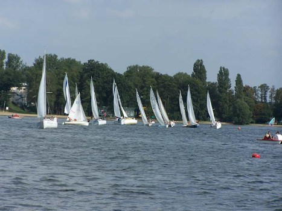
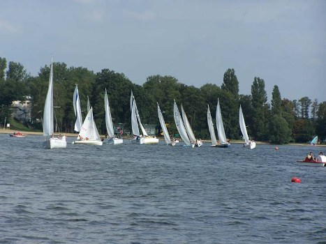
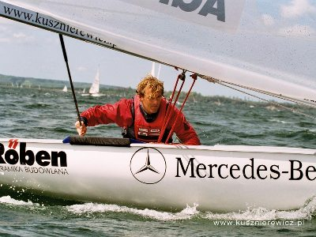

|
|
|
|
|

rodzaje klas wêz³y
zielony |
stone wykona³ Jakub Batlewicz n3  
zdjêcie regat w boszkowie mejl- LUDWI@WP.PL na stronie mo¿na znaleœæ: -wszelkie informacje dotycz¹nce regat o puchar ameryki (najwiêkszej imprezie rzeglarskiej na œwiecie)-wilm nakrencony na podstawie wyda¿eñ kture zmieni³y te w³aœnie regaty (film wiatr(zwiastun, krutki opis) -gre na pdstawie w³aœnie tych regat (recenzje Virtul Skipper 5, zwiastun VS 4 i VS 5)
tag¿e mo¿na znaleœæ: -wszystkie klasy ¿agluwek olimpijskich oraz niezliczonom iloœæ sportowo regatowych(prosze wysy³aæ zdjêcia jakiæ fajnychklas sportowych) -oraz wszelkie podstawowe rodzaje wêz³uw ¿eglarskich (jeœli spodoba ci sie lekcja polecam ksi¹¿ke "krok po kroku wêz³y zasady wi¹zania" Maria Costantion)
kusznierewicz zdobywca br¹zu na olimpiadzie w 2004 w klasie finn
!!!!!!!!!!!!!!!!!!!!!!!wersja beta!!!!!!!!!!!!!!!!!!!!!!
|